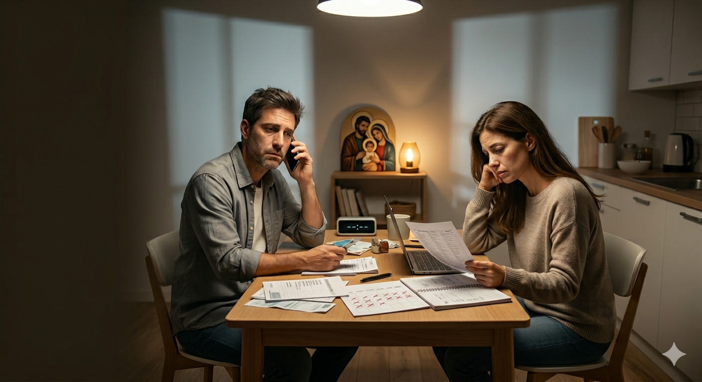

"La Agenda Llena"

El Caso Breve (Para leer en 1 minuto)
Carlos y Elena están atrapados en la rutina y el cansancio. Sus conversaciones se han vuelto puramente logísticas ("¿quién compra la leche?", "¿a qué hora recogemos a los chicos?", "¿pagaste la planilla?"). Hace semanas que no tienen un espacio para mirarse a los ojos, conversar en profundidad o saber cómo está el corazón del otro. Sienten que el tiempo se les escapa entre los dedos.
Consigna para los Grupos (5 minutos)
Cada grupo de 3 parejas debe consensuar una sola acción concreta combinando estas dos preguntas:
¿Qué soltar? (Austeridad): ¿A qué distracción o tarea superflua de la noche van a renunciar para recuperar tiempo?
¿Qué consagrar? (Sacralidad): ¿Qué hábito sencillo de 10 minutos van a crear en casa para volver a conectar a solas?